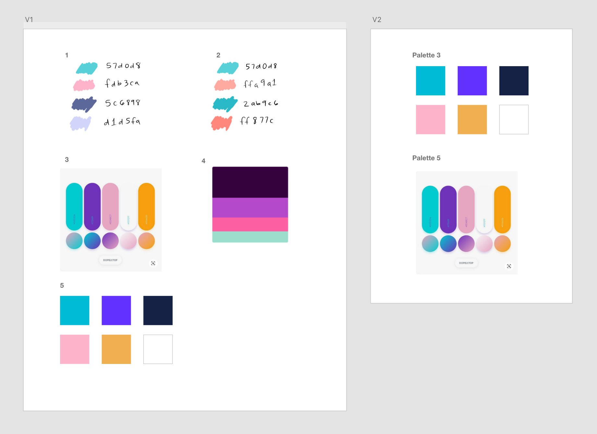
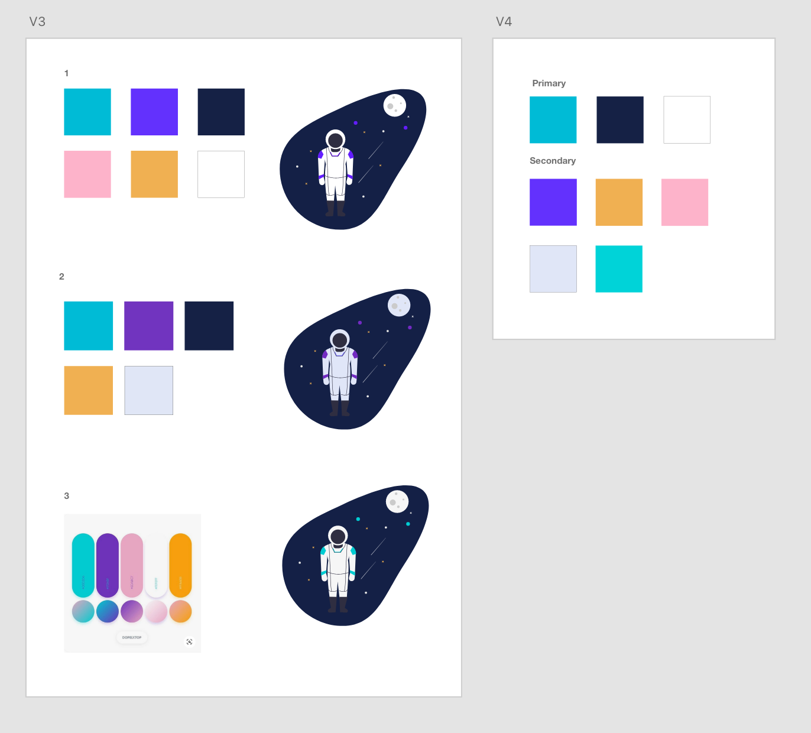
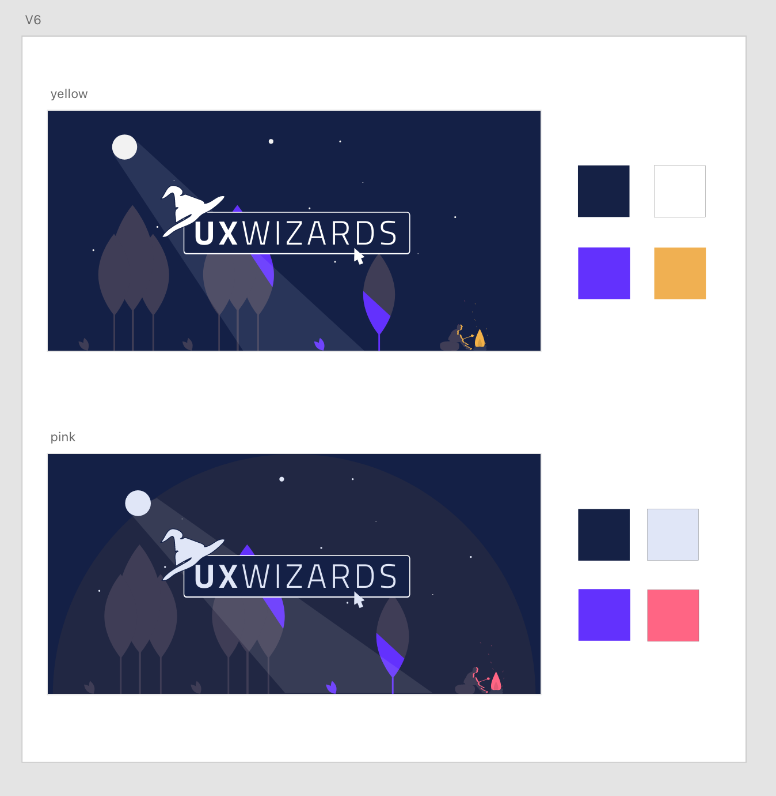

Expand the color palette in a way that aligns with our brand.
*When we started the project, there was only one Turquoise color to identify the brand.
Create a color palette that speaks to the brand, which is playful, magical and fun.
V1: As a first step, the team came up with potential color palettes, which we presented to the committees for feedback.
V2: 2 of the color palettes were selected from the V1. Both color palettes have a similar set of colors: turquoise, purple, yellow, pink, and neutral colors: white, navy. We then needed to find the right shade and balance for the palettes.
V3:Colors were tested by using illustrations to visualize the color usage, balance, and the versatility.
V4:We drafted the primary and secondary palette. The two turquoise colors were pretty close so we removed one from the secondary colors for the next version.
We tested the yellow and pink accent colors. In V4, the pink was more pastel, but we changed it to a more intense pink so the color stands out even if you use small amounts.
We added sub-colors for each color for the last stage: One lighter and one darker shade. Each color was named after wizards and magical related names that made the colors more memorable and fun. The letters on each color show the color contrast for accessibility.